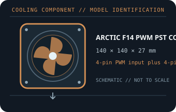

[ COOLING // IDENTIFIED COMPONENT ]
ARCTIC F14 PWM PST CO
140 × 140 × 27 mm continuous-operation PWM case fan with PST. This record identifies the exact variant and its documented electrical and mechanical limits.

MODEL IDENTIFICATION: ARCTIC F14 PWM PST CO. This entry applies to this exact product variant; suffixes such as Pro, PST, A-RGB, Slim, Silent, and CO describe distinct models or interfaces. Match the item number and revision to the manufacturer documentation.
Recorded specifications
| Cataloged part | ARCTIC F14 PWM PST CO |
|---|---|
| Product class | continuous-operation PWM case fan with PST |
| Frame dimensions | 140 × 140 × 27 mm |
| Speed / control range | 200–1350 rpm PWM |
| Maximum airflow | 74 cfm (126 m³/h) |
| Maximum static pressure | 1.3 mm H₂O |
| Electrical rating | 12 V DC; 0.30 A |
| Connector | 4-pin PWM input plus 4-pin PST fan pass-through |
| Interface / fit | 140 mm case mounts with 27 mm thickness; check frame, panel, and cable clearance. CO denotes the continuous-operation dual-ball-bearing model. |
| Recordkeeping | Record the exact model, item/revision, host, control mode, wiring, condition, and manufacturer document revision. |
Host compatibility and handling
- No CPU socket compatibility is claimed: this is a chassis/radiator fan, not a heatsink. Match the frame, mounting-hole pattern, depth, and airflow direction to the case or radiator manual.
- 140 mm case mounts with 27 mm thickness; check frame, panel, and cable clearance. CO denotes the continuous-operation dual-ball-bearing model.
- Before using a PST lead, calculate the combined current of every fan connected to that output; do not exceed the motherboard or controller channel rating.
- Keep motor power/control distinct from any lighting connection. Match exact pinout and voltage to the host manual; never force a keyed plug or connect an addressable-lighting lead to an incompatible 12 V RGB header.
- Unplug the host before installation. Keep fingers and loose wiring away from blades; replace cracked frames or damaged cables and investigate bearing noise rather than blocking a fan.
Model notes
This is a 140 mm F-series airflow model, not a P-series pressure-optimized fan. Chained loads remain subject to the first host output current rating.
Vendor airflow and pressure ratings are model/test-condition specifications, not a guarantee of the same result in a particular case or radiator. Confirm installed fan curves, actual clearances, and host current budget.
Sources & further reading
- ARCTIC manufacturer product page — ARCTIC F14 PWM PST COProduct identification, model features, and connection details.
- ARCTIC manufacturer specification sheet — ARCTIC F14 PWM PST COPrimary technical data reference for dimensions and performance figures recorded above.
- ARCTIC support / control documentationAdditional connection and host-control reference; verify the product revision and regional variant.
Manufacturer data may vary by revision and package. Check the complete model designation and item number on the actual unit.